앱 소스 자체의 표시 오류입니다. 주문·수량·계산·입력 검증은 동일합니다. 각 페이지에는 한 종류의 오류만 적용하며 운영자나 QA 플랫폼 없이 직접 열 수 있습니다.
기능 검사: 데스크톱 17/17, 모바일 5/5 PASS. 전체 58테스트와 두 앱 빌드 PASS. 새 H~K의 실제 Vision 검출은 미검증이며 모델 호출은 0건입니다. 화면만으로 기울어진 디자인의 의도까지 확정할 수 없으므로 정상 A와 제품 배치 기준을 함께 사용하세요.
검수 범위 · 데스크톱 원장 · 모바일 원장 · 파일 해시 · 자료 모음
원래 글자 간격과 구성요소 배치
샘플 /store/a 열기 — npm run sample:start 필요
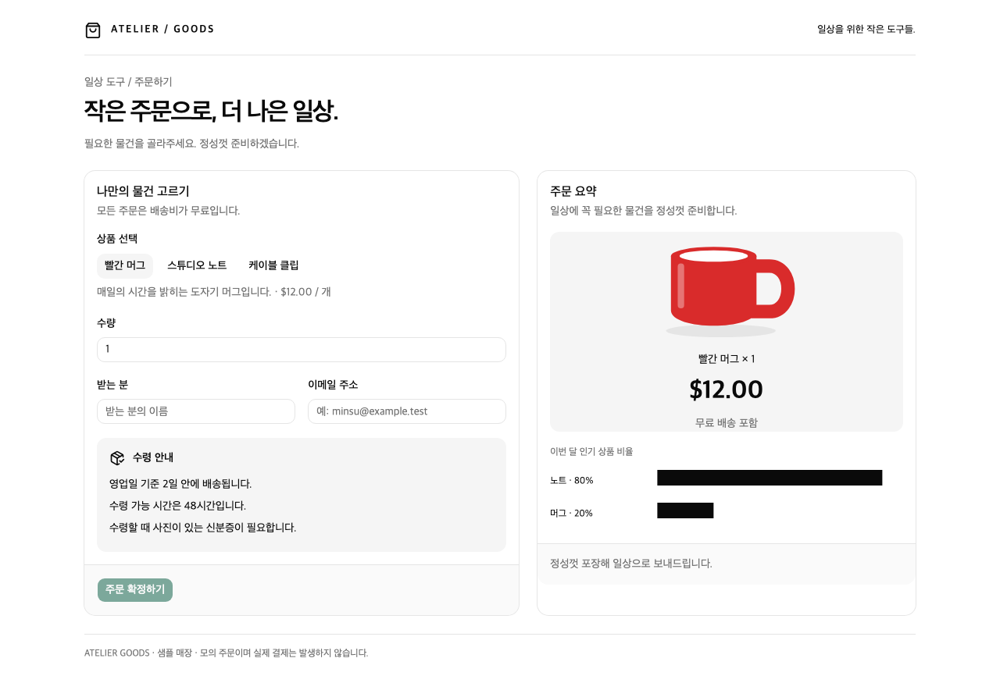
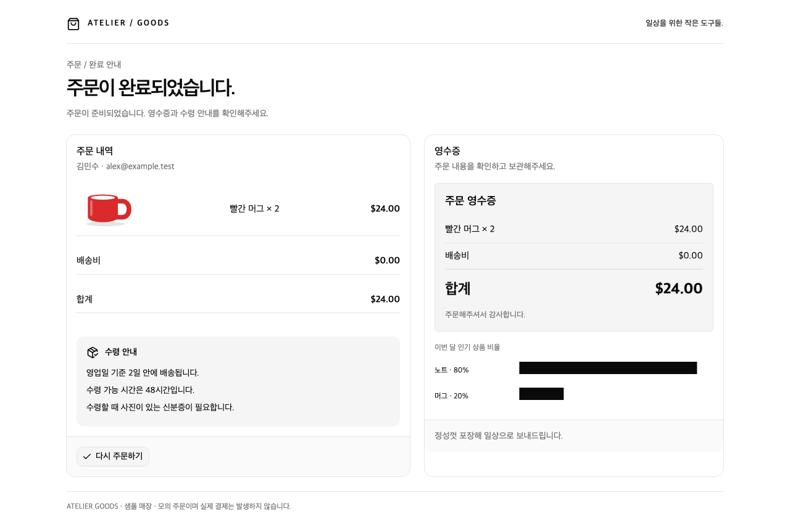
제목과 요약/영수증 글자가 오른쪽으로 압축되고 자간이 좁아집니다.
샘플 /store/h 열기 — npm run sample:start 필요
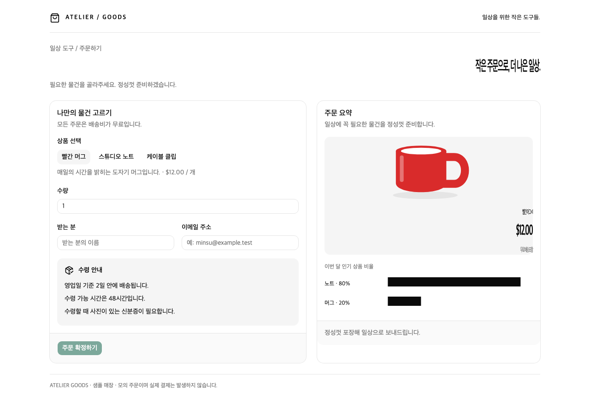
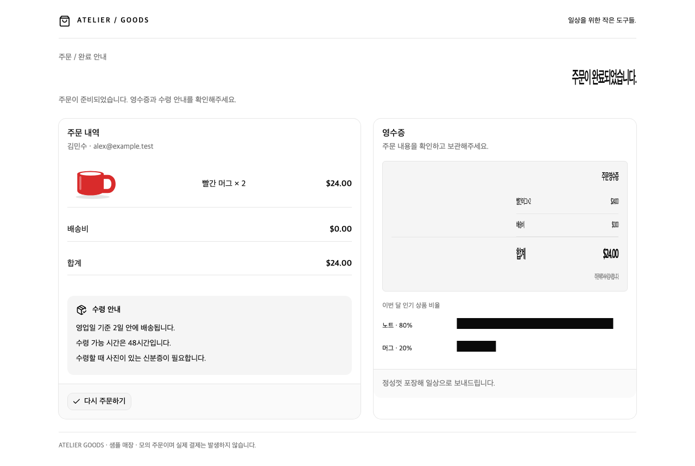
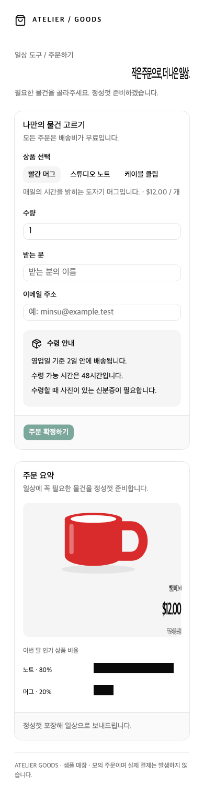
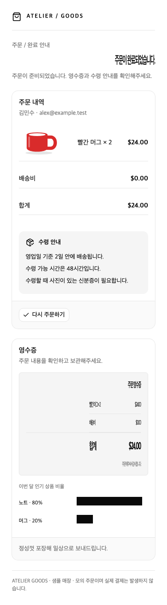
한글 수령 안내의 줄간격이 좁아져 문장끼리 겹칩니다.
샘플 /store/i 열기 — npm run sample:start 필요
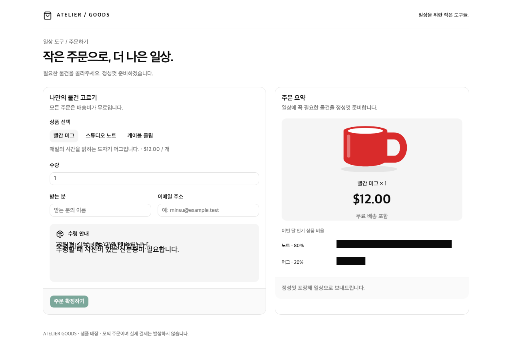
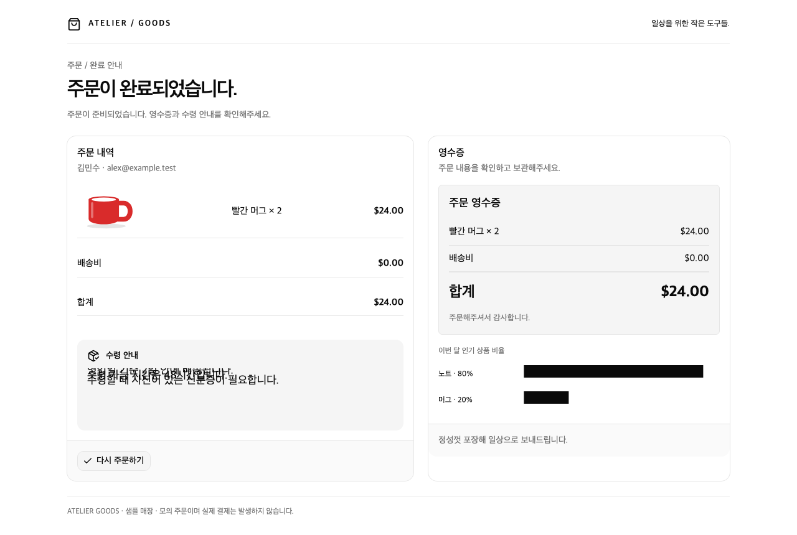
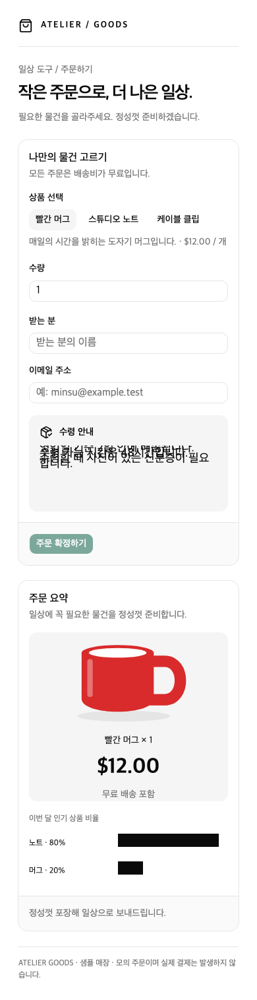
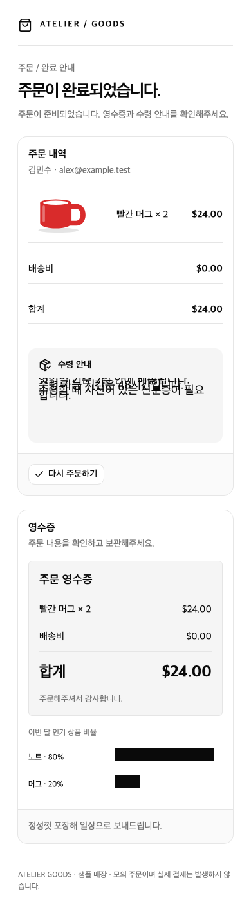
실제 상품 그림이 오른쪽으로 이동하고 기울어집니다. 좁은 화면에서는 일부가 잘립니다.
샘플 /store/j 열기 — npm run sample:start 필요
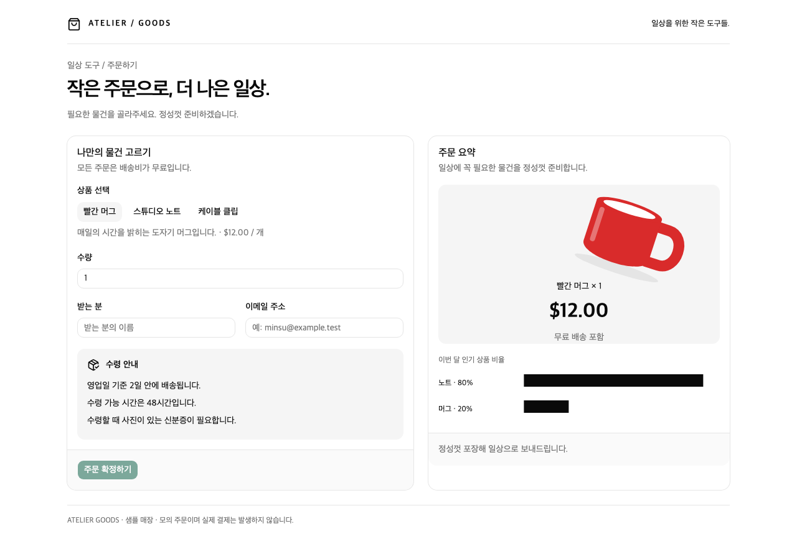
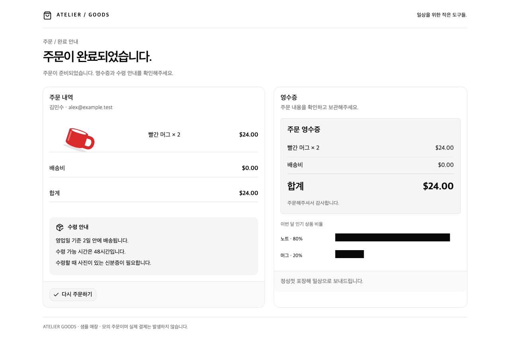
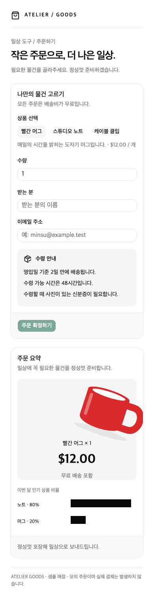
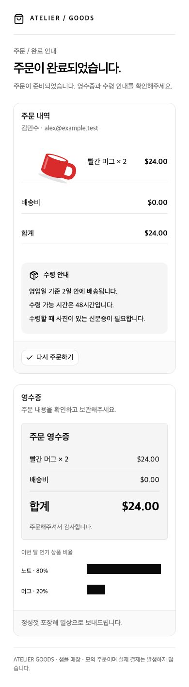
라벨이 아래로 이동하고 기울어져 올바른 막대와 정렬되지 않습니다.
샘플 /store/k 열기 — npm run sample:start 필요
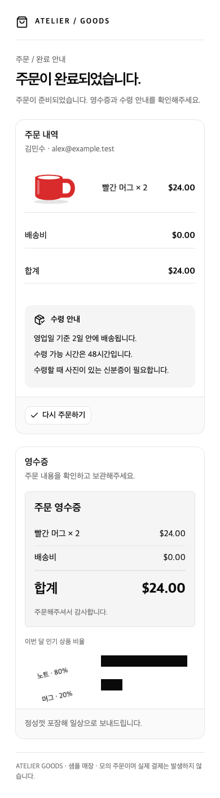
원본은 브라우저 전체 페이지 캡처이며 모델 입력 이미지가 아닙니다. 검수 코드 33eddf2. 기존 A~G·과거 모델 원장과 영상은 보존합니다.